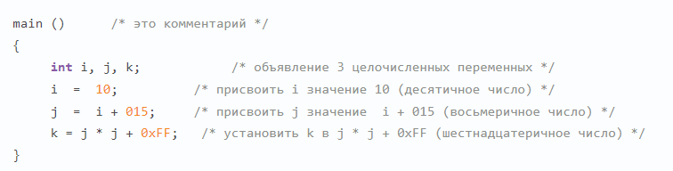

Программа на Cи состоит из набора процедур (часто называемых функциями, даже если они не возвращают значений). Эти процедуры содержат объявления, операторы и другие элементы, которые вместе говорят компьютеру что надо делать.
Пример процедуры в Си:
Cи имеет переменные, и что эти переменные должны быть объявлены до использования. Cи также имеет операторы, в этом примере это операторы присваивания. Все операторы должны заканчиваться точкой с запятой.
Комментарии начинаются с символов « / *» и заканчивается символами «* /» и могут занимать несколько строк.